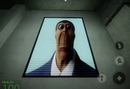
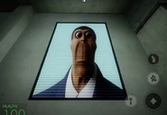

this is the great Obunga
“ Hello, this is your former president, Barack Obama, and I just want to tell you I know how to beatbox! With a little bit of... [beatbox noises] Yeah! [continues beatboxing] ” ―Obunga's proximity audio
Obunga was one of the various nextbots that hunted down players in Nico's Nextbots. He was released in the initial release. It was formerly found in Nico's Mall. He spawned by the mini white walls on the third floor.
Obunga is a distorted version of former U.S. President Barack Obama, having swarthy brown skin, gray-brown hair and black eyes. As well as sporting a white shirt with a light brown and blue necktie, over a formal dark blue suit with an American flag clip. In this nextbot counterpart, he has very large eyes and a large jaw and his face resembles the creatures that resemble mutated cockroaches shown in the manga and live adaption of Terra Formars.
Although the exact origin is unknown, the first archive of Obunga is from July 24, 2013, where an image of Obunga was posted on the /tv/ board of 4chan. Obunga picked up popularity during June 2018 due to multiple users posting Obunga memes on Instagram. Obunga regained popularity of the summer of 2022 when it was first used as a bot in the NextBot chase mod from Garry's Mod.
The audio is from a video called "Obama Beatbox" by professional beatboxer, verbalase. The original video has been made private, but there have been many reuploads of the video, such as one on the Roblox Audio Library that was presumably used in Nico's Nextbots. The jumpscare audio is from an emoji screaming while fading away.
 
